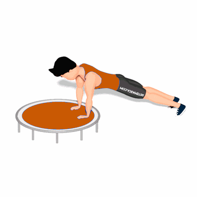

Prancha com Flexão Externa de Joelho no Jump

O exercício tem como objetivo o fortalecimento dos músculos da região abdominal e quadril. E ainda previne lesões, já que melhora a postura e a consciência postural, alivia dores na coluna e melhora a estabilidade e a flexibilidade.
Ficha Técnica
Tipo: Funcional
Grupo Muscular: Abdome
Aparelho: Nenhum
Músculos: Nenhum
Como realizar
- Apoie as mãos no trampolim;
- Comece na posição de flexão com suas mãos alinhadas com os ombros e abaixo deles;
- Mantenha os pés alinhados com os quadris, de modo que o corpo forme uma linha reta dos ombros aos tornozelos;
- Contraia o abdômen e flexione um joelho em um ângulo de 90 graus, levando em direção a lateral de seu corpo;
- Certifique-se de levar o quadril junto também, movimentando levemente a ponta do pé que está no chão;
- Retorne à posição inicial para repetir o movimento com a perna oposta.
 RC STORE
RC STORE